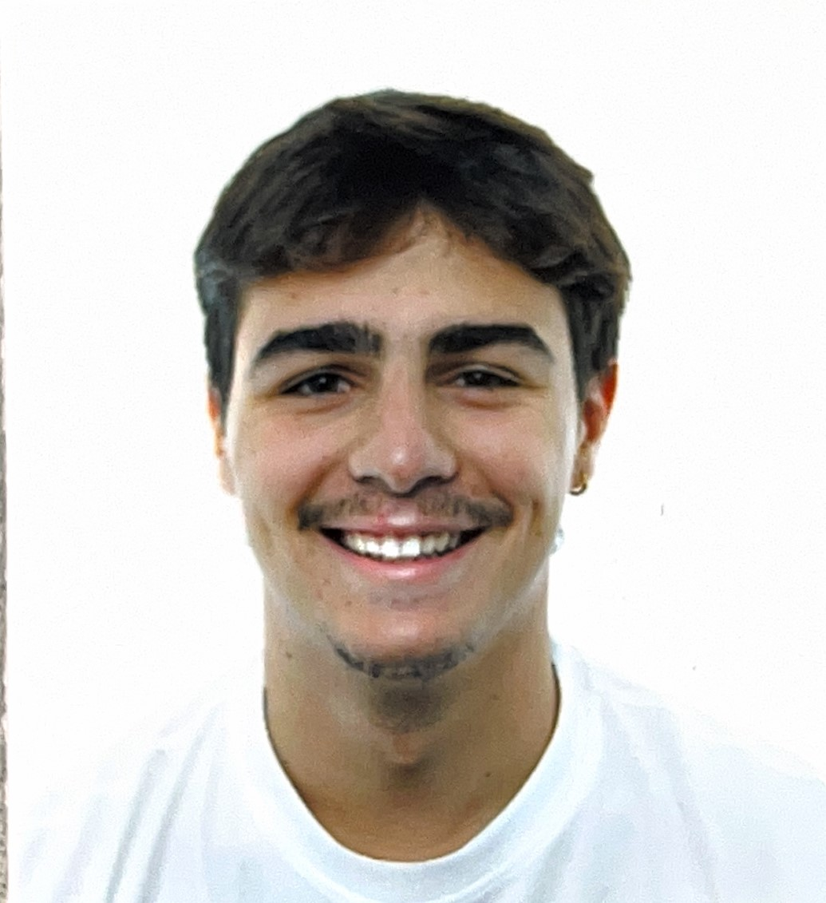

Soy estudiante de cuarto año de Ingeniería Informática en la Universidad de Granada, especializado en Computación y Sistemas Inteligentes.
Mis intereses incluyen la Inteligencia Artificial, el procesamiento de imágenes y el desarrollo de modelos de Deep Learning.
Proyectos
Reconocimiento de género
Desarrollo de un sistema para identificar género utilizando LBP y SVM.
Complejidad de contraseñas
Modelo que evalúa y clasifica la complejidad de contraseñas.
Calificación de redacciones
Automatización de la calificación usando NLP.
Wearable para detección de caídas

Estoy haciendo un proyecto para la asignatura de Tecnologías Emergentes, en el que estoy implantando un ESP32 para un wearable que detecta caídas para personas mayores. Además, te envía por Telegram un mensaje y la ubicación de la caída.